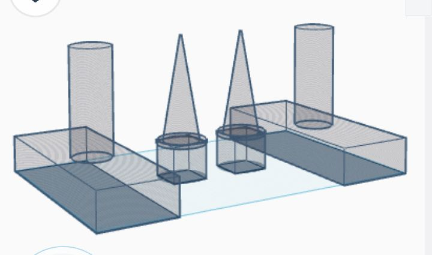

Diseño y Construcción

Esquema de Conexiones

Diseño Estructural
Código Arduino
/*
Código para robot con interruptor maestro SIN RESISTENCIA EXTERNA.
Se utiliza la resistencia interna PULLUP del Arduino.
*/
// --- Pines para los Motores ---
const int enA = 9;
const int in1 = 7;
const int in2 = 6;
const int enB = 10;
const int in3 = 5;
const int in4 = 4;
// --- Pin para el Sensor de Línea ---
const int pinSensor = 2;
// --- Pin para el Interruptor ---
const int pinInterruptor = 3;
// --- Potencia de los motores ---
const int velocidadMotores = 70;
void setup() {
// Configurar pines de motores como SALIDA
pinMode(enA, OUTPUT);
pinMode(in1, OUTPUT);
pinMode(in2, OUTPUT);
pinMode(enB, OUTPUT);
pinMode(in3, OUTPUT);
pinMode(in4, OUTPUT);
// Configurar pin de sensor como ENTRADA
pinMode(pinSensor, INPUT);
// ¡CAMBIO AQUÍ! Usamos INPUT_PULLUP para activar la resistencia interna
pinMode(pinInterruptor, INPUT_PULLUP);
// Iniciar con los motores detenidos
detenerMotores();
}
void loop() {
// 1. Leer el estado del interruptor
int estadoInterruptor = digitalRead(pinInterruptor);
// ¡CAMBIO AQUÍ! La lógica se invierte: LOW es ENCENDIDO
if (estadoInterruptor == LOW) {
// ---- EL ROBOT ESTÁ ENCENDIDO ----
int estadoSensor = digitalRead(pinSensor);
if (estadoSensor == LOW) {
moverAdelante();
} else {
moverAtras();
}
} else {
// ---- EL ROBOT ESTÁ APAGADO ----
detenerMotores();
}
}
// --- Función para mover ambos motores hacia adelante ---
void moverAdelante() {
digitalWrite(in1, HIGH);
digitalWrite(in2, LOW);
digitalWrite(in3, HIGH);
digitalWrite(in4, LOW);
analogWrite(enA, velocidadMotores);
analogWrite(enB, velocidadMotores);
}
// --- Función para mover ambos motores hacia atrás ---
void moverAtras() {
digitalWrite(in1, LOW);
digitalWrite(in2, HIGH);
digitalWrite(in3, LOW);
digitalWrite(in4, HIGH);
analogWrite(enA, velocidadMotores);
analogWrite(enB, velocidadMotores);
}
// --- Función para detener ambos motores ---
void detenerMotores() {
digitalWrite(in1, LOW);
digitalWrite(in2, LOW);
digitalWrite(in3, LOW);
digitalWrite(in4, LOW);
analogWrite(enA, 0);
analogWrite(enB, 0);
}